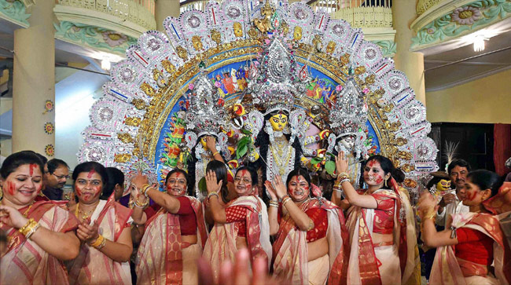

The puja rituals are long and complicated. Three days of Mantras (words for spiritual transformation), Shlokas (verse) chants and Arati (prayer) and offerings are made, which include Vedic chants and multiple recitations of the Devi Mahatmya text in Sanskrit. Durga Slokas (which is also known as Devi Mantra) praises Durga as symbol of all divine forces. According to the sloka, Durga is omnipresent as the embodiment of power, nourishment, memory, forbearance, faith, forgiveness, intellect, wealth, emotions, desires, beauty, satisfaction, righteousness, fulfillment and peace.
The specific practices vary by region. The following being most common:
Preliminaries: the preparations before the actual Durga puja begins.
Bodhana: the rites to awaken and welcome the goddess to be a guest, typically done on the sixth day of the festival.
Adhivasa: anointing ritual wherein many symbolic offerings are made to Durga, where each item represents a remembrance of subtle forms of her. Typically completed on the sixth day as well.
Saptami: bathing of the goddess, selection of the priest, elaborate prayers (arati), recitation of texts describing Durga heading to war against evil, the ululu ritual (group meditation and scream-like crying at high points by women), done on the seventh day of the festival.
Mahastami: similar to Saptami, more prayers, recitation and enactment of Durga legends and scriptures on the eighth day. The day is significant because the moment when it ends and ninth day begins is considered the moment Durga kills the buffalo demon, the good once again emerges victorious over evil.
Sandhi Puja: a forty eight minute high point that celebrates the climax of war which goddess Durga was engaged in. In some regions, devotees sacrifice an animal such as a buffalo or goat, but in many regions there isn't an actual animal sacrifice and a symbolic remembrance substitutes it. The surrogate effigy is smeared in red vermilion to symbolize the blood spilled. The goddess is then offered food (bhog) by women, and afterwards everyone eats. Major sites celebrating Durga Puja engage in a sixteen part devotional service. The community begins merry making, music, dancing and women playfully smear the faces of their companions with sindoor (vermilion), all as a mark of the victory of good over evil.
Mahanavami: the ninth day of festival observes rites similar to Saptami, with the difference that the celebration is after Durga's victory and Vedic style homa (fire oblation) rituals are now included. The other deities on the stage, such as Ganesha, Kartikeya, Lakshmi and Saraswati are remembered and prayers offered to them.
Vijaya Dasami: the tenth and last day, marked by a great procession where the clay statues are ceremoniously walked to a river or ocean coast for a solemn goodbye to Durga. Many mark their faces with vermilion (sindoor) or dress in something red. It is an emotional day for some devotees, and the congregation sings emotional goodbye songs. When the procession reaches the water, Durga is immersed, the clay dissolves, and she is believed to return to Mount Kailasha with Shiva and cosmos in general. People distribute sweets and gifts, visit their friends and family members. Some communities such as those near Varanasi mark the eleventh day, called ekadashi, by visiting a Durga temple.

Drummers called dhakis, carrying large leather-strung dhak create music, people dance and complete the final day of worship called aarati. On the tenth day, the clay Durga image is carried in great procession, with music and dancing, to a river or to ocean, where she is immersed as a goodbye and her return to Mount Kailasha and the cosmos.
The entire process of creation of the sculptures (murti) from the collection of clay to the ornamentation is a ceremonial process. Though the festival is observed post monsoon harvest, the artisans begin making the statues months before, during the summer. The process begins with prayer to Ganesha and to the materials such as bamboo frames in which the statue are cast.
Clay, or local soil collected from different parts of the region, forms the base. This choice is a religious tradition wherein Durga, as the creative energy and material, is believed to be present everywhere and everything in the universe. In Kolkata, one custom is to include soil samples, in the clay mixture for Durga, from areas locals believe to be nishiddho pallis (forbidden territories, brothels).
The clay base is combined with straw, kneaded then molded into cast made from bamboo. This is set like any clay pot, layered to a final shape, cleaned, and polished when ready. A layer of vegetable fiber called jute, mixed in with clay, is attached to the top to prevent the statue from cracking in the months ahead. The heads of the statues are more complex, and usually cast separately. The limbs of the statues are mostly shaped from bundles of straws. Then, starting about August, the local artisans hand-paint the statues of Durga, Lakshmi, Saraswati, Ganesha, Kartikeya, the lion and the buffalo demon. The goddesses are dressed in fine silk saris, shown bejeweled and put into a pandal.
The procedures and proportions of statue (pratima or murti) are described in arts-related Sanskrit text of Hinduism, such as the Vishvakarma sastra.